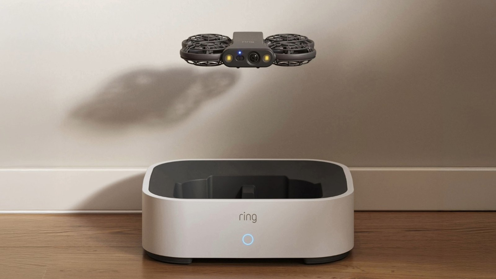
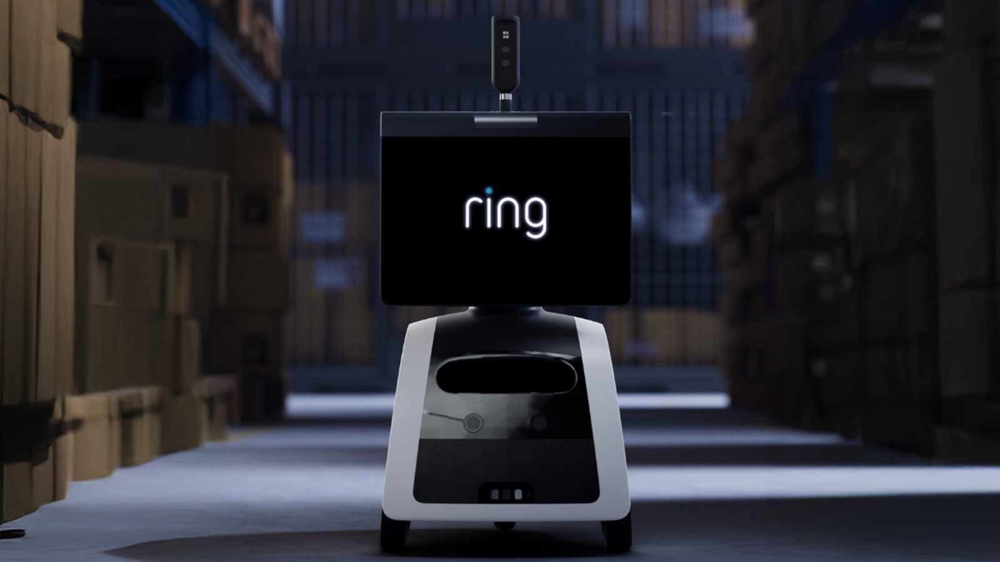
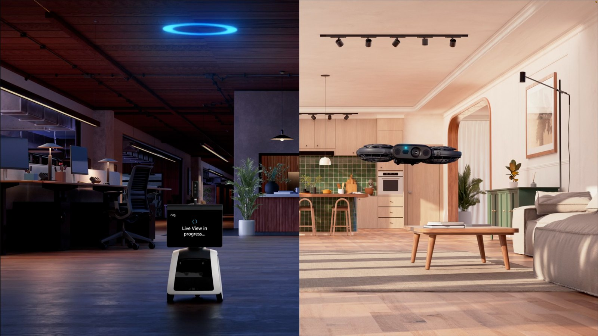

News · Devices
Ring Drone Cam: Amazon's flying security camera is indoor-only
Amazon's Ring announced a flying security camera for the home on Tuesday, November 10, plus a rolling patrol robot aimed at businesses. The flying model is called Ring Drone Cam. It costs $249.99 and is scheduled to ship in the United States on January 27, 2027. It does not work outdoors.
Ring's product page is direct about that: the drone is "designed for indoor use only," in rooms between 41°F and 95°F (5°C to 35°C). Ring founder Jamie Siminoff told CNBC the drone cannot fly outside under Federal Aviation Administration rules that require a pilot to keep a drone in sight. "We have told our customers not to do that because it's illegal," he said. "We've also put guardrails in there to make it so it doesn't fly outside."
The two devices are the first products under a new Ring Robotics name. Both are powered by a system Ring calls AI Pilot, which maps a space, suggests spots to check, and steers around furniture and other obstacles.

How the Drone Cam flies and docks
The Drone Cam sits in a charging dock with its camera off until you send it out. From the Ring app you can launch it on demand, set custom flight routes, or have it take off automatically when another Ring camera, sensor, or alarm is triggered. When the flight is over, or the battery runs low, it flies back to the dock to recharge.
Ring says a flight lasts up to eight minutes on a new, fully charged battery under controlled conditions. Actual time will vary. The Verge, after a hands-on demo at Ring's New York launch, reported Ring's claim that every minute of flight takes about eight minutes to recharge.
The camera records 2K video (1920×1920) with a 148-degree field of view and can rotate 360 degrees. Two built-in LED lights come on in the dark. Ring says this is not infrared night vision. The official FAQ also says the drone has no microphone or speaker, so it does not record audio, support two-way talk, or include a siren.
CNBC, which attended the demo, described a textbook-sized drone with two plastic-encased propellers and a loud buzz in the air. Ring's announcement treats the noise as intentional: the propellers "aren't quiet," so people in the house can hear it coming. The Verge and WIRED both put the weight at 165 grams. Ring lists the color as gray.
To set it up, you carry the drone through your indoor spaces. AI Pilot turns that walk-through into a floor plan, names rooms, and suggests patrol points such as a side door or a window. You can then send it to a room, to a saved viewpoint, or to a spot you tap on the map. WIRED reported that you cannot manually pilot it like a hobby drone.
Privacy, subscriptions, and when you can buy it
Ring says privacy is the default. The drone powers down in the dock with the camera off and, per the product FAQ, "only records while it's flying." Both new devices have LED indicators when they are recording. Video is protected by Ring's Throw Away the Key encryption (TAKE), which the company calls its strongest default encryption yet.
A compatible Ring Protect plan is required for scheduled patrols and for reviewing saved video. Ring has not said which plans qualify.
Email updates are open now, but the drone is not yet for sale. Ring's announcement includes a required notice: the Drone Cam "has not been authorized as required by the rules of the Federal Communications Commission" and "may not be offered for sale or lease" until that authorization is obtained. Shipping is listed as the U.S. only, beginning January 27, 2027. The Ring product page says it does not ship to Canada.
Siminoff told The Verge and WIRED the drone is assembled in the United States. WIRED reported that he said it is assembled in Texas, and that because it does not work outdoors and weighs under 250 grams, it does not need to be registered with the FAA.
This is Ring's second try at a flying indoor camera. The company previewed the Always Home Cam in 2020 at a similar $249 price, later offered it by invitation, and never put it on general sale. Siminoff told CNBC he held the product back until the design, sensors, and data processing were ready. The new drone is much smaller than that earlier model, with the camera built into the body and more of the navigation work running in the cloud.
The Rover Cam, for businesses, is indoor-only too
The companion product is Ring Rover Cam, a wheeled security robot for businesses, priced at $999.99. It is available to preorder in the U.S. and is scheduled to ship on December 16, 2026. It also does not ship to Canada.

Officially, Rover Cam is "designed for dry, indoor spaces only," on a single floor. It cannot be used outdoors, and it cannot climb stairs. Ring says it can cover up to 5,000 square feet, map a space on its own, raise a periscope camera over counters and shelves, record in up to 4K while it moves, and respond when a connected Ring device is triggered. It has a siren, a light tower, two-way audio, and infrared night vision — features the flying camera does not have. In Sleep Mode, the periscope retracts and the microphone turns off.
Ring says the Rover was inspired by Amazon Astro customers who liked roving security most. The company "leveraged the best of Astro" to build a purpose-built security robot rather than a home robot that also does security.

For tinkerers: Alexa, but not Matter or Home Assistant
The Drone Cam works with Ring cameras, doorbells, sensors, and alarms, and Ring says it can be controlled from the new Alexa Home Map. Both devices need Wi-Fi. The Verge reported that without an internet connection, the drone can only land.
Ring has not announced Matter support, Home Assistant support, or any local-control path. If you want this in a Home Assistant dashboard, there is no official way to do that today.
FAQ
Does the Ring Drone Cam work outside?
No. Ring's product page says the Drone Cam is designed for indoor use only, between 41°F and 95°F (5°C to 35°C). Ring founder Jamie Siminoff told CNBC the drone cannot fly outside under FAA line-of-sight rules, and that Ring has added guardrails so it does not fly outside.
When does the Ring Drone Cam ship, and what does it cost?
Ring's official price is $249.99. It is scheduled to begin shipping to customers in the United States on January 27, 2027. It is not for sale yet. Ring is taking email sign-ups, and says the device has not received required FCC authorization, so it may not be offered for sale until that authorization is obtained. The Ring product page says it does not ship to Canada.
Does the Ring Rover Cam work outside?
No. Ring's product page says Rover Cam is designed for dry, indoor spaces only, on a single floor. It cannot be used outdoors and cannot climb stairs. It is priced at $999.99, is available for preorder in the U.S., and is scheduled to ship on December 16, 2026.
Do you need a Ring Protect subscription?
A compatible Ring Protect plan is required for scheduled patrols and for reviewing saved video. Ring has not said which plans qualify.
Does it work with Home Assistant, Matter, or Alexa?
Ring says the Drone Cam works with Ring cameras, doorbells, sensors, and alarms, and can be controlled from the new Alexa Home Map. Ring has not announced Matter support, Home Assistant support, or a local-control path.
How long can the Drone Cam fly?
Ring says up to eight minutes per flight on a new, fully charged battery under controlled conditions, after which it returns to its charging dock. Actual flight time will vary.